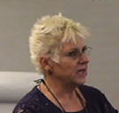
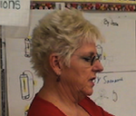

|  |  |
Alice is a fourth grade teacher. She has been in education for over thirty-three years as an elementary through middle school teacher, and as a district math and science resource teacher. She is a recipient of the Greater San Diego Math Council County Mathematics Teacher of the Year award and was a finalist for the Southern California Presidential Mathematics Award.
Alice was delighted to discover that her students' reaction to science totally changed after she began to teach responsively. She also found teaching science was more rewarding as an instructor. Students would cheer when she announced it was time for science, a reaction she had not gotten previously. Guiding questions caused students to dig deeper into their thinking. Because student ideas drove the activities, the children had more buy-in to the lessons. Students were better able to focus on the concepts (even at the end of the day!) because they had generated the pathway of the lessons.
"Students had fun, something that was not common in the past. Also, intense curiosity encouraged students to create and practice homework applications on their own. Students would excitedly come to school with new ideas and inventions because they were motivated to explore and further their thinking at home. Parents frequently dropped by the classroom to comment on their children's excitement with science."
Alice found that the responsive teaching model was great preparation for her district's push for critical thinking. Due to the successes in student learning and focus, she uses these strategies in other curriculum areas as well.